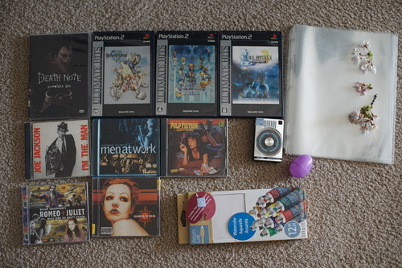

I went out to take some hanami photos of hina! it was windier than i hoped but hina only fell on her face once. she's fine dont worry. i need a reflector or something next year but maybe it wouldn't help because of the wind anyway

the little arbitrarium was surprisingly full compared to last year. there were a ton of families. one middle eastern couple with a little boy came up and asked to see her and the man even took photos of her! I ran into my manager from work and she thought hina was beautiful ;a;

imagine if she had been my first doll and she fell on her face the first time i brought her outdoor. i would have cried!! 10+ dolls later i pick her up and go "hesus christ hina put yourself together!!"

the thrift store has been really awesome lately for media. we only stopped in for 15 minutes before it closed and found all of these. this is mostly all ryan's! i didnt bring my wallet. I brought hina straight from my photoshoot
i honestly dont know what this is but i'm ready to watch it whatever it is. NOT ryan's!!!
mine! not the album i was looking for but i'm happy to try this one
mine!
I have volume 2 already!
i know godsmack's name but don't know any songs off the top of my head. what the heck did they sing...
ryan did that baller thing where he bought the binder they were in and then donated it after he paid
unopened. not a great great deal because they're cheap quality but i still wanted it. obviously not ryans!
omake: draw me like one of your french girls